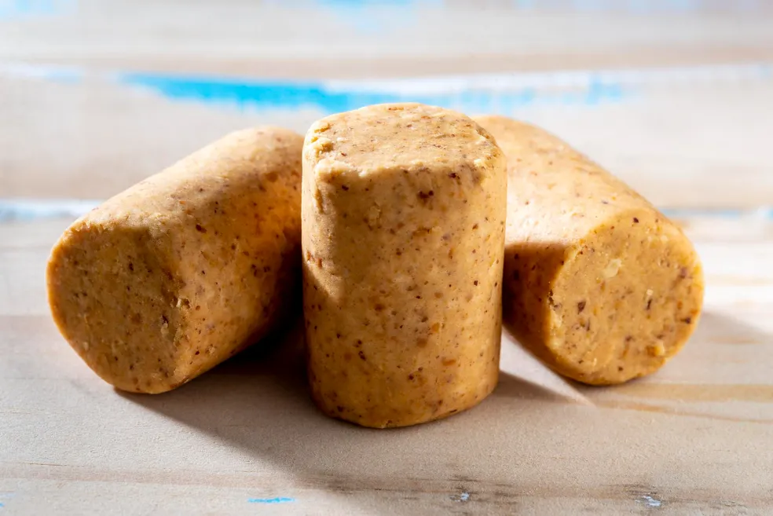
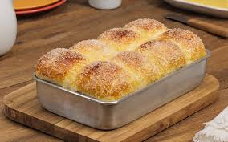

Um doce brasileiro preparado com apenas 3 ingredientes: amendoim, açúcar e uma pitada de sal. A dica é colocar a mão na massa, como o nome de origem indígena sugere “Pa-Soka” - esmagar com as mãos. Assim, o amendoim libera um óleo que dá liga ao doce.

Ingredientes 2 xícaras de açúcar 1 xícara de água 3/4 de xícara de glucose de milho clara Suco de 1 limão-cravo ou essência no saber de sua preferência Corante a gosto Modo de preparo Primeiramente, misture todos os ingredientes em uma panela média. Em seguida leve ao fogo, e sem mexer deixe cozinhar até formar uma calda. Quando atingir o ponto de bala dura, despeje o conteúdo em formas de acetato próprias para pirulito. Por último adicione os palitos e deixe secar. E então, depois de endurecer completamente, é só desinformar e servir os pirulitos.
Ingredientes 3 ovos 1 colher de sopa de margarina 1 colher de café de sal 40 mililitros de óleo de soja 3 colheres de sopa de açúcar 10 gramas de fermento biológico seco 250 mililitros de leite morno 1 quilo de farinha de trigo Açúcar cristal a gosto
NAO TEM MODO DE PREPARO SEJE *CRIATIVO*